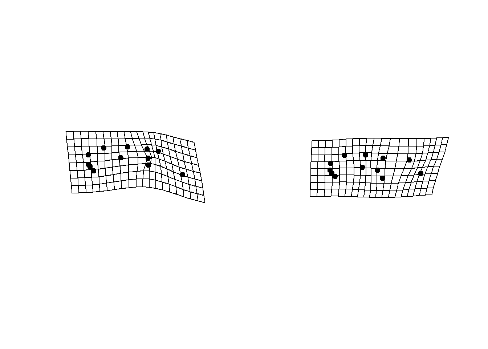

Group-Comparison
Mark A. Conaway
Introduction
A common need in GM studies is to determine the extent to which two or more groups of organisms differ in their shape. There are three separate angles from which one can approach this problem.The first is simply to ask, “do these groups differ significantly from one another in terms of their shape?” The answer to this question is best acquired using a Procrustes ANOVA. Secondly, one might want to explore the extent to which one’s groups are different from one another. This is accomplished by way of a pairwise comparison which can tell the user specifically which groups (or which combinations of variables) are different from one another.
Here, we will walk the reader through an entire workflow of a group comparison research project using R and geomorph. We will begin with preliminaries such as reading in data, Procrustes alignment, etc., and end with visualization of shape differences.
Click on each step below to expand!
Group Comparisons using geomorph
0: Preliminaries
First we will need to read our data into R. There are several ways that this can be done with data in several different formats (see the Reading Data tutorial for detailed explanations of each). Here we will be using coordinate data of salamander crania in tps format. Additionally, data for our independent variables (site and species designation) will be read in from csv files.
#load geomorph
library(geomorph)
#read in landmark data
plethdata <- readland.tps("Data-figures/plethland.tps", warnmsg = F)
#read in site and species variables
site <- factor(as.matrix(read.csv("Data-figures/plethsite.csv", header = T)))
species <- factor(as.matrix(read.csv("Data-figures/plethspec.csv", header = T)))Important Note! The dataset being used here
(including site and species data) is included with the geomorph package.
Simply type data(plethodon) into the console to access it.
We read these data in manually here for illustrative purposes only.
Next, we will perform a Generalized Procrustes Analysis (GPA) on our
coordinate data to remove the effects of translation, rotation, and
scaling. Please see the Generalize Procrustes Analysis
tutorial for more detailed information of the gpagen
function.
gpa <- gpagen(plethdata, print.progress = F)Finally, we will combine all of our data into a geomorph data frame. This is not required, but is highly recommended in order to ensure that our analyses will run smoothly.
#create geomorph data frame
gdf <- geomorph.data.frame(gpa, site = site, species = species)
#create a factor that includes all combinations of site and species
gdf$Group <- interaction(gdf$site, gdf$species)Now we are ready to run our analyses!
1: Procrustes ANOVA
For the first phase of our analysis, we will determine if our groups are significantly different from one another. A Procrustes analysis of variance (ANOVA) is useful for determining the significance of group differences. In the context of GM this can be rephrased as a determination of the extent to which the mean values of a particular group are a better estimate of shape than the mean of the entire dataset. For example, a common approach might be to use a Procrustes ANOVA to determine if species designation better explains shape than locomotor category. In that sense, then, a significant result for the former comparison allows the researcher to say that shape differs significantly among species in their dataset.
To perform this analysis in geomorph, we will use the function
procD.lm.
procD.lm() (Expand for more details)
This function performs a Procrustes ANOVA, allowing the user to determine whether coordinate data are correlated with other independent variables. The required input is a data frame, although the more specific geomorph data frame is recommended. Please note that some of the arguments for this function are not addressed here, but can be found in the separate Advanced Options tutorial.
- \(f1\): Formula for the linear model, similar to a regression formula. So, given a dependent variable \(y\) and two independent variables \(x1\) and \(x2\), a possible formula could be something like y~x1+x2
- \(iter\): Number of iterations for significance testing (default of 999)
- \(seed\): Optional argument for setting the seed for random permutations of the resampling procedure. If this is left at NULL, results will be the same when analyses are run multiple times on the same data. This argument can also be set at “random” which will result in varying results when run multiple times.
- \(RRPP\): Logical value (“TRUE” or “FALSE”) indicating whether residual randomization should be used for significance testing. See Collyer et al. (2015) for more information on this method.
- \(SS.type\): The type of sums of squares (SS) used in computation. Input of “I” corresponds to sequential SS, “II” to hierarchical, and “III” to marginal sums of squares.
- \(effect.type\): Specifies the random distribution from which effect size is estimated. Options are “F”, “SS”, “cohenf”, “MS”, or “Rsq”.
- \(int.first\): Logical value indicating whether interactions of the first main effects should precede subsequent main effects.
- \(data\): The input geomorph data frame (see above)
Using the geomorph data frame that we created above, our input code for this function will look something like this:
fit <- procD.lm(coords ~ species * site,
data = gdf, iter = 999, turbo = TRUE,
RRPP = TRUE, print.progress = FALSE)The formula we are using (coords ~ species.V1 * site.V1) can be expressed alternatively as, “do different species of salamander differ significantly in their cranial shape, after accounting for the effects of habitat on species?”
To view a summary of the overall results, simply use this code:
summary(fit)##
## Analysis of Variance, using Residual Randomization
## Permutation procedure: Randomization of null model residuals
## Number of permutations: 1000
## Estimation method: Ordinary Least Squares
## Sums of Squares and Cross-products: Type I
## Effect sizes (Z) based on F distributions
##
## Df SS MS Rsq F Z Pr(>F)
## species 1 0.029258 0.029258 0.14856 14.544 4.2241 0.001 **
## site 1 0.064375 0.064375 0.32688 32.000 5.2101 0.001 **
## species:site 1 0.030885 0.030885 0.15682 15.352 5.4075 0.001 **
## Residuals 36 0.072422 0.002012 0.36774
## Total 39 0.196940
## ---
## Signif. codes: 0 '***' 0.001 '**' 0.01 '*' 0.05 '.' 0.1 ' ' 1
##
## Call: procD.lm(f1 = coords ~ species * site, iter = 999, RRPP = TRUE,
## turbo = TRUE, data = gdf, print.progress = FALSE)Here, each row corresponds to one of the comparisons specified in our formula, and each column is a result for that comparison.
- \(Df\) = Degrees of freedom
- \(SS\) = Sum of squares (total variance)
- \(MS\) = Mean Squares
- \(Rsq\) = R-squared (percentage of variance explained by group difference)
- \(F\) = The F value, or variation between sample means/variation within sample means
- \(Z\) = Z-score
- \(Pr(>F)\) = P value
Our results indicate that our salamander crania do indeed vary by species, and by site!
Further, this function produces an object of class “procD.lm”, which is a list containing the following:
procD.lm Output
The following is the full output for the procD.lm
function. Any of these subsets can be accessed using the $
operator.
- \(aov.table\): An analysis of variance table; the same as the summary.
- \(call\): The input code.
- \(coefficients\): A vector or matrix of linear model coefficients.
- \(Y\): The response data, in matrix form.
- \(X\) The model matrix (This will be important for our visualizations later).
- \(QR\): The decompositions of the model matrix into the product of an orthogonal matrix “Q” and an upper triangular matrix “R” generated from the calculation of eigenvalues.
- \(fitted\): The fitted values.
- \(residuals\): The residuals (observed responses - fitted responses).
- \(weights\): The weights used in weighted least-squares fitting. If no weights are used, NULL is returned.
- \(Terms\): The results of the terms function applied to the model matrix
- \(term.labels\): The terms used in the input formula for the linear model
- \(data\): The data frame for the model.
- \(SS\): The sums of squares for each term, model residuals, and the total.
- \(SS.type\): The type of sums of squares. One of type I or type III.
- \(df\): The degrees of freedom for each SS.
- \(R2\): The coefficient of determination for each model term.
- \(F\): The F values for each model term.
- \(permutations\): The number of random permutations (including observed) used.
- \(random.SS\): A matrix of random SS found via the resampling procedure used.
- \(random.F\): A matrix or vector of random F values found via the resampling procedure used.
- \(random.cohenf\): A matrix or vector of random Cohen’s f-squared values found via the resampling procedure used.
- \(permutations\): The number of random permutations (including observed) used.
- \(effect.type\): The distribution used to estimate effect-size.
- \(perm.method\): A value indicating whether “Raw” values were shuffled or “RRPP” performed.
- \(gls\): This prefix will be used if a covariance matrix is provided to indicate GLS computations.
2: Pairwise Comparisons
The Procrustes ANOVA allows us to answer the question, “do our groups differ?” And our initial analyses tell us that indeed they do. Specifically, we learned that X can be considered a significant predictor of Y. However, what this method does not tell us is exactly which subsets of our groups are different. In other words, while we know that our groups are different given our variables, the extent of that difference is still unknown. Given our example dataset, the answer to this question may seem rather obvious since we have fairly clear groupings in the plot of our fit:
fitplot <- plot(fit, pch = 21, bg = gdf$Group, type = "PC")
legend("topright", legend = levels(gdf$Group), pch = 21, pt.bg = 1:4)
However, we do not know which of these groups are statistically
significantly different from one another. And of course, one could
easily imagine a dataset with differences that are far less clear, but
nonetheless potentially significant. A pairwise comparison will give us
a more complete picture of this. We will be using the
pairwise function found in RRPP, a dependent package of
geomorph, that is automatically loaded when geomorph is loaded.
pairwise()
This function allows the user to perform pairwise comparisons of group means of a linear model fit generated from a Procrustes ANOVA. Note that there are some arguments that are not addressed here, but instead are explained in more detail in the Advanced Options tutorial.
- \(fit\): A linear model fit. In our
case, it is the object we created using
procD.lm - \(groups\): A factor or vector that can be coerced into a factor that describes the groups for which we want to perform our pairwise comparisons with
- \(print.progress\):
Now, let’s run our analysis:
pairs <- pairwise(fit, groups = gdf$Group)Our input is the object fit we created with
procD.lm. Comparisons are specified by the
group argument. The comparisons we are making here are as
follows:
- Allopatric \(P. jordani\) vs. Sympatric \(P. jordani\) (Allo.Jord:Symp.Jord)
- Allopatric \(P. jordani\) vs. Allopatric \(P. teyahalee\) (Allo.Jord:Allo.Teyah)
- Allopatric \(P. jordani\) vs. Sympatric \(P. teyahalee\) (Allo.Jord:Symp.Teyah)
- Sympatric \(P. jordani\) vs. Allopatric \(P. teyahalee\) (Symp.Jord:Allo.Teyah)
- Sympatric \(P. jordani\) vs. Sympatric \(P. teyahalee\) (Symp.Jord: Symp.Teyah)
- Allopatric \(P. teyahalee\) vs. Sympatric \(P. teyahalee\) (Allo.Teyah:Symp.Teyah)
Our results for these comparisons can be viewed in the same way as for the ANOVA:
summary(pairs)##
## Pairwise comparisons
##
## Groups: Allo.Jord Symp.Jord Allo.Teyah Symp.Teyah
##
## RRPP: 1000 permutations
##
## LS means:
## Vectors hidden (use show.vectors = TRUE to view)
##
## Pairwise distances between means, plus statistics
## d UCL (95%) Z Pr > d
## Allo.Jord:Symp.Jord 0.09566672 0.09226464 2.2305051 0.015
## Allo.Jord:Allo.Teyah 0.02432519 0.07774489 -3.1495859 1.000
## Allo.Jord:Symp.Teyah 0.10136696 0.11812556 -0.1921641 0.568
## Symp.Jord:Allo.Teyah 0.09193082 0.10897149 -0.3111746 0.628
## Symp.Jord:Symp.Teyah 0.10694324 0.07639056 3.9866153 0.001
## Allo.Teyah:Symp.Teyah 0.09949800 0.09314049 2.6760941 0.003These results show that all but one of these groups are significantly different from the others in terms of shape. The one non-significant comparison was between the allopatric \(P. jordani\) and the allopatric \(P. teyahalee\). In words, this means that these two species have more similar morphology when their habitats do not overlap (allopatry), and that close contact between them (sympatry) may have led to a divergence of that morphology. Our previous plot of ANOVA results makes much more sense now!
3: Visualizations
Now that we know that 1) our groups differ and 2) to what extent they differ, the final piece of our analytical puzzle is to determine exactly \(how\) our groups differ. In other words, what physical traits specifically contribute to the differences we see among groups.
In order to do this, we will utilize two functions found in geomorph;
shape.predictor and plotRefToTarget.
shape.predictor()
This function generates sets of predicted landmark coordinates of
groups in a dataset based on Procrustes-aligned coordinates, and any
number of input predictors. The resulting shape predictions can be used
then for visualization of shape differences among groups, using
plotRefToTarget (see below).
- \(A\): A 3D array of Procrustes-aligned coordinates.
- \(x\): Linear numeric predictors
such as PC scores, or a factor (designations for a discrete variable).
In our case, this will be the model (or design) matrix returned by the
procD.lmfunction.
plotRefToTarget()
- \(M1\): Landmark coordinates for the reference specimen
- \(M2\): Landmark coordinates for the target specimen
- \(links\): A matrix defining links between landmarks, for visualization purposes.
- \(method\): One of four potential types of plot for displaying the results.
To generate our visualizations, first we will need to use
shape.predictor:
X <- fit$X
X <- X[,-1]
symJord <- c(0,1,0) # design for P. Jordani in sympatry
alloJord <- c(0,0,0) # design for P. Jordani in allopatry
pred <- shape.predictor(arrayspecs(fit$fitted, 12,2), x = X, symJord=symJord, alloJord=alloJord,
Intercept = T)As arguments for the function we include the fitted values generated from our Procrustes ANOVA (A), as well as the model matrix of the same analysis (X). This matrix indicates which individual belongs to which subgroup of our data using 1s and 0s. The final two arguments here are the specific groups (among our total potential combinations of factors) for which we want to generate visual comparisons. The result are two sets of landmark coordinates; one for each requested prediction:
pred$symJord## 1 2
## 1 0.1818847 -0.009361447
## 2 0.2051431 -0.075816757
## 3 -0.0344502 0.001353607
## 4 -0.2819713 -0.098427956
## 5 -0.3133573 -0.063571878
## 6 -0.3269658 -0.041961937
## 7 -0.3255171 0.038844601
## 8 -0.1891747 0.099668691
## 9 0.0228886 0.104148031
## 10 0.1959484 0.083237658
## 11 0.3281302 0.066775437
## 12 0.5374415 -0.104888050
## attr(,"class")
## [1] "mshape" "matrix"Finally, to visualize the difference between these two groups, we
will use the plotRefToTarget function:
M <- gpa$consensus
plotRefToTarget(M, pred$symJord, mag=2)
plotRefToTarget(M, pred$alloJord, mag=2)
Here, M is the consensus, or mean, shape of our \(original\) input landmark data. The second
argument is one of the two sets of landmarks generated by
shape.predictor. The “links” landmark is a matrix
indicating which landmarks should have lines drawn between them, further
aiding visualization. This matrix is structured like so:
plethodon$links## [,1] [,2]
## [1,] 4 5
## [2,] 3 5
## [3,] 2 4
## [4,] 1 2
## [5,] 1 3
## [6,] 6 7
## [7,] 7 8
## [8,] 8 9
## [9,] 9 10
## [10,] 10 11
## [11,] 11 12
## [12,] 12 1
## [13,] 1 9
## [14,] 1 10The “method” for visualization used above is the default “TPS.” There are two other potential ways in which results of this function can be plotted (for 2D landmark data) which we illustrate here:
par(mfrow=c(1,3))
plotRefToTarget(M, pred$symJord, mag=2, method = "TPS" )
plotRefToTarget(M, pred$symJord, mag=2, method = "vector")
plotRefToTarget(M, pred$symJord, mag=2, method = "points")